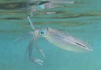

いかの漁獲量 都道府県ランキング
全39都道府県の順位と漁獲量
いかの漁獲量が全国で最も多いのは青森県で、9,876 tです。全国（5万679 t）の19%を占めます。

| 順位 | 都道府県 | 漁獲量 | 全国に占める割合 |
|---|---|---|---|
| 1位 | 青森県 | 9,876 t | 19% |
| 2位 | 富山県 | 5,241 t | 10% |
| 3位 | 北海道 | 4,733 t | 9.3% |
| 4位 | 宮城県 | 4,481 t | 8.8% |
| 5位 | 兵庫県 | 3,902 t | 7.7% |
| 6位 | 岩手県 | 3,571 t | 7.0% |
| 7位 | 長崎県 | 2,914 t | 5.7% |
| 8位 | 沖縄県 | 2,399 t | 4.7% |
| 9位 | 石川県 | 1,548 t | 3.1% |
| 10位 | 鳥取県 | 1,509 t | 3.0% |
| 11位 | 愛媛県 | 1,144 t | 2.3% |
| 12位 | 島根県 | 976 t | 1.9% |
| 13位 | 山口県 | 847 t | 1.7% |
| 14位 | 福岡県 | 689 t | 1.4% |
| 15位 | 福井県 | 653 t | 1.3% |
| 16位 | 福島県 | 524 t | 1.0% |
| 17位 | 大分県 | 503 t | 1.0% |
| 18位 | 鹿児島県 | 479 t | 0.9% |
| 19位 | 新潟県 | 459 t | 0.9% |
| 20位 | 愛知県 | 459 t | 0.9% |
| 21位 | 宮崎県 | 428 t | 0.8% |
| 22位 | 東京都 | 401 t | 0.8% |
| 23位 | 茨城県 | 375 t | 0.7% |
| 24位 | 佐賀県 | 298 t | 0.6% |
| 25位 | 千葉県 | 252 t | 0.5% |
| 26位 | 和歌山県 | 244 t | 0.5% |
| 27位 | 秋田県 | 230 t | 0.5% |
| 28位 | 山形県 | 221 t | 0.4% |
| 29位 | 香川県 | 195 t | 0.4% |
| 30位 | 徳島県 | 171 t | 0.3% |
| 31位 | 京都府 | 170 t | 0.3% |
| 32位 | 三重県 | 165 t | 0.3% |
| 33位 | 神奈川県 | 157 t | 0.3% |
| 34位 | 熊本県 | 133 t | 0.3% |
| 35位 | 高知県 | 75 t | 0.1% |
| 36位 | 広島県 | 70 t | 0.1% |
| 37位 | 岡山県 | 67 t | 0.1% |
| 38位 | 静岡県 | 64 t | 0.1% |
| 39位 | 大阪府 | 55 t | 0.1% |
PR

いかの漁獲量の推移（令和2年〜令和6年）
全国の漁獲量は、令和2年の8万2,179 tから令和6年の5万679 tへ、38%減りました。期間中、1位は一貫して青森県です。
| 年 | 全国 | 1位 | 2位 | 3位 |
|---|---|---|---|---|
| 令和6年 | 5万679 t | 青森県9,876 t | 富山県5,241 t | 北海道4,733 t |
| 令和5年 | 4万8,741 t | 青森県9,234 t | 北海道6,330 t | 長崎県4,520 t |
| 令和4年 | 5万9,351 t | 青森県1万1,640 t | 北海道9,505 t | 兵庫県5,310 t |
| 令和3年 | 6万3,899 t | 青森県1万1,721 t | 北海道9,433 t | 長崎県7,429 t |
| 令和2年 | 8万2,179 t | 青森県1万8,557 t | 北海道1万1,024 t | 長崎県6,558 t |
この数字について
- 分類：烏賊の仲間
- 全国の漁獲量：5万679 t
- この数字が表すもの：漁獲量（海面漁業の漁獲量。養殖は含みません）
- 調査：海面漁業生産統計調査（海面漁業） 令和6年
- 39県分を調査（調査していない県は順位に入りません）
いかの漁獲量について、よくある質問
- いかの漁獲量が日本一の都道府県はどこですか？
- 青森県です。海面漁業生産統計調査（海面漁業）（令和6年）で9,876 tでした。
- いかの漁獲量ランキング2位・3位はどこですか？
- 2位は富山県（5,241 t）、3位は北海道（4,733 t）です。
- いかの漁獲量ランキング4位・5位はどこですか？
- 4位は宮城県（4,481 t）、5位は兵庫県（3,902 t）です。いかの全39県の順位は上の表のとおりです。
- いかの全国の漁獲量はどれくらいですか？
- 5万679 t（令和6年）です。